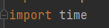

How to run your program per 60 seconds interval?
This only works when your program is on and running in the background. First, import the time module.

Set the defined functionality into a while loop that will keep running

And tell it to sleep for how much desired seconds you want using the time module, in this example, it is 60 seconds. Then your code will run as long as needed.